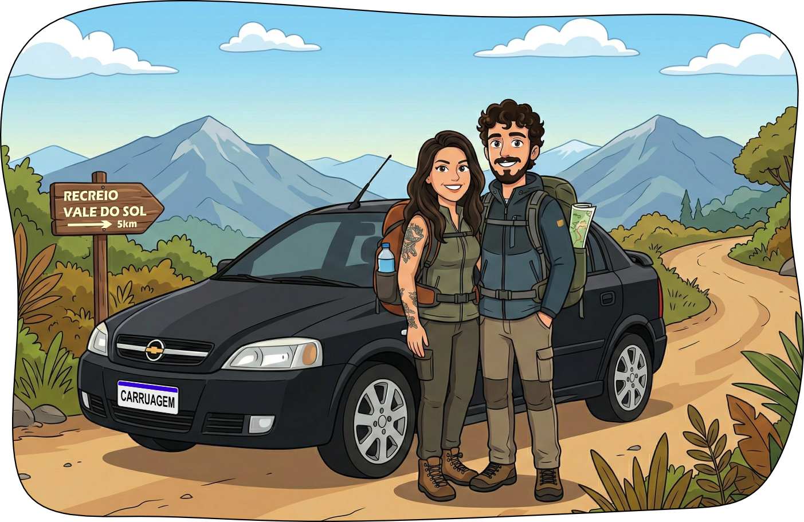

"Caminho se conhece andando, então vez em quando é bom se perder..."
Minha querida Rai, entre os dias 8, 9 e 10 de abril, você viverá dias de madame, mas uma madame camponesa, talvez.
Leve roupa de frio, estaremos a maior parte do tempo acima de 1.500 metros de altitude. Mas não precisa exagerar, o seu cobertor humano estará lá. Também teremos um jantar fora. Vale pensar em um look babilônico.
Não faremos trilha pesada, mas pode ser que tenha alguma caminhada leve.
Prepare para tirar fotos. Vamos passar por lugares belíssimos.
O MantiRai funciona sem internet. Qualquer dúvida, pergunte ao seu digníssimo e belíssimo namorado.
Estou com saudades e te esperando aqui! Nos vemos em breve. Beijos!.
Carregando coordenadas...
✨ Ponto Revelado ✨